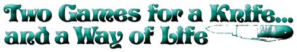

ABOVE RIGHT: Starting position for both games. ABOVE: You've just ""scored"" another turn in mumbly-peg and a walk in baseball. IMMEDIATELY ABOVE: Either 25 points or double . . . 75 or triple . . . 100 or a home run . . . and?too bad!?either a lost turn or a strikeout.